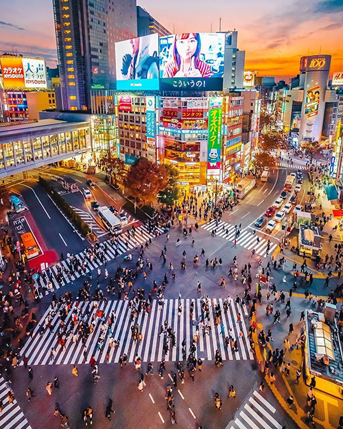
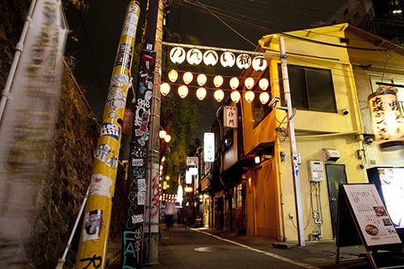

Shibuya is a special ward in Tokyo, Japan. As a major commercial and finance center, it houses two of the busiest railway stations in the world, Shinjuku Station (southern half) and Shibuya Station. As of April 1, 2022, it has an estimated population of 228,906[citation needed] and a population density of 15,149.30 people per km2 (39,263.4/sq mi). The total area is 15.11 km2 (5.83 sq mi). The name "Shibuya" is also used to refer to the shopping district which surrounds Shibuya Station. This area is known as one of the fashion centers of Japan, particularly for young people, and as a major nightlife area.
As one of Tokyo’s most densely packed and brightly-lit central districts, it’s no surprise that Shibuya stays up late, with countless eateries, boutiques, watering holes, clubs, arcades and karaoke bars catering to night owls well into the small hours.
Shibuya is especially popular with Tokyo’s youth, but is relatively accessible to and full of non-Japanese locals and visitors as well. With dozens of clubs featuring top local and international DJs, Shibuya is one of the city’s dance music hubs.
There are also countless smaller establishments well worth checking out, including the character-filled Nonbei Yokocho, an old-fashioned area of tightly-packed side streets filled with charming tiny bars and intriguing restaurants.
